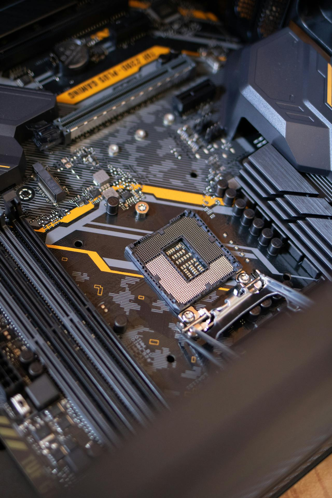

Compliance should not be treated as a final step in hardware development. It must be considered during the prototype stage to avoid costly redesigns and certification failures.
A well-prepared prototype can significantly improve testing success rates and reduce time to market.
1. Understand Compliance Requirements Early
Before building a prototype, it is essential to define the applicable standards and regulatory requirements, such as CE, EMC, and safety directives.

Early awareness helps guide both electrical and mechanical design decisions.
2. Design with EMC in Mind
EMC performance is one of the most common reasons prototypes fail compliance testing. Ignoring EMC considerations during design leads to high risk.

You can also learn more about why hardware prototypes fail EMC testing.
3. Optimize Enclosure and Structure
The enclosure design directly affects electromagnetic performance. Poor structural design can create emission paths and shielding issues.

Reducing gaps, improving grounding, and ensuring proper material selection are key factors.
4. Perform Pre-Compliance Testing
Pre-compliance testing allows you to identify potential issues before formal certification. This step is critical for reducing failure risk.

Understanding EMC testing cost can also help you plan your testing strategy effectively.
5. Prepare for Certification
Once the prototype is validated, preparing documentation and test plans is essential for a smooth certification process.

You can follow a structured approach outlined in the hardware product development process.
Conclusion
A compliance-focused prototype reduces risks, shortens development cycles, and improves certification success rates.
By integrating compliance thinking into design, testing, and validation stages, companies can bring products to market more efficiently.